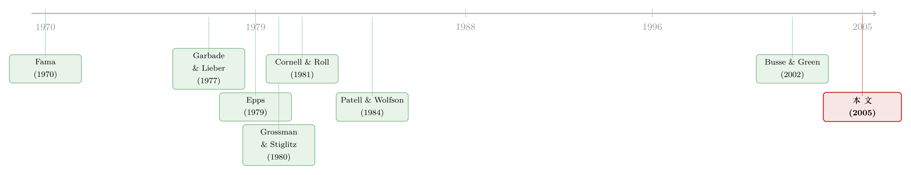

市场要多久才「想明白」？——给效率装上一只秒表
本文读的是 Chordia, Roll & Subrahmanyam (2005, Journal of Financial Economics)：在 NYSE 上，日度收益率几乎是随机游走、毫无序列相关，可同一批股票的「订单失衡」却能在好几天里一路同向延续。这两件事如何同时成立？作者把镜头从「天」拉近到「分钟」，发现答案是——精明的投资者用日内的反向交易，把延续性悄悄抹平了；而抹平它所需要的时间，超过五分钟，但不到六十分钟。
1 一个摆在桌面上的矛盾
先讲一件看上去自相矛盾的事。
一方面，我们都「知道」大盘是有效的。在 1996 到 2002 年间，标普 500 指数日度收益率的一阶自相关系数是 -0.0015，p 值高达 0.95——这几乎就是一条教科书里画出来的随机游走 (random walk)。你拿昨天的涨跌去预测今天，毫无用处。
可另一方面，同样是这些股票，它们的订单失衡 (order imbalance, OIB)——也就是某段时间里主动买单减去主动卖单的净额——却顽固得惊人。今天买方占了上风，明天、后天大概率还是买方占上风。作者在更早的一篇文章里（Chordia, Roll & Subrahmanyam, 2002）算过：标普 500 成份股明天的总订单失衡，有超过 50% 能被过去的收益与过去的失衡预测出来。换句话说，单子是一连好几天地往同一个方向涌的——要么是羊群效应，要么是大单被拆开慢慢喂给市场，要么两者皆有。
于是张力就出来了：如果买压连着好几天往同一边推，价格为什么没有跟着连着好几天往同一边走？ 持续的买单本该制造持续的正收益，进而在日度上留下正的序列相关。可日度收益偏偏是干净的随机游走。
这中间，一定有人在「擦屁股」。
2 把矛盾翻译成一个可被测量的问题
要让这两件事和解，只有一种可能：一定有一群精明的投资者，在当天之内就看穿了「订单失衡还会延续」这件事，抢先做了足够多的反向交易 (countervailing trades)，把本该外溢到日度的序列相关性，在一天结束之前就消化干净了。
这本是个老掉牙的直觉——套利者会把傻钱推出去的偏差再拉回来。但作者问了一个别人很少正面回答的问题：
这个「擦屁股」的过程，到底需要多久？是逐笔交易之间就完成？还是几分钟、几十分钟？市场达到弱式有效 (weak-form efficiency)——即抹平收益的可预测性——的那只秒表，究竟走了多长一段？
这就是全文的核心，也是它最漂亮的地方：它把一个含混的哲学命题（「市场是有效的」）改写成了一个有刻度、能被秒表计量的工程问题（「市场达到有效需要 N 分钟，N 等于多少？」）。
作者的判断很朴素：收益不可能逐笔、甚至逐分钟地相互独立。精明的投资者得花点时间才能搞清楚订单那头发生了什么——是有真实的基本面新信息，还是仅仅一阵无意义的买卖冲动；他们得判断、得下手、得把价格推到新的均衡，然后才能把残余的序列相关清扫干净。这段「从冲击到清扫完毕」的时间窗，就是本文要测的东西。
3 识别策略：不靠模型，靠两道台阶
怎么测？作者的思路是「拾级而下」，分两步走。
第一步，先确认日度上确实没东西。 用 CRSP 的日度收益，他们检验这 150 只股票是否符合半强式有效 (semistrong-form efficiency)：未来收益能不能被过去收益或过去订单失衡预测。结果（见原文表 1）：1996 年日度收益一阶自相关均值只有 0.002，t 值 0.38——而且作者还诚实地提醒，由于不同股票的收益本身正相关，这个 t 值其实高估了显著性。真正有意思的对照是：订单失衡自己的日度自相关，在 1996 和 1999 年都超过 0.3，2002 年也有 0.249。一边是几乎为零的收益相关，一边是高达 0.3 的失衡相关——矛盾被量化地钉死了。
第二步，把时钟拨快，钻进交易日内部。 既然日度上序列相关已经被擦干净，那「擦」的动作必然发生在更短的尺度上。于是作者去算日内的短期收益：对每只股票，找到最接近 9:40、9:50…… 这些整点的成交价，算出五分钟、十分钟、十五分钟、三十分钟、六十分钟等不同区间的收益与订单失衡。
这里有几处值得称道的手艺活：
- 为避免买卖价反弹 (bid-ask bounce) 污染——逐笔成交价会在买价、卖价之间来回跳，人为制造负的一阶自相关——他们用报价中点 (quote midpoint) 而非成交价来算收益。
- 用 Lee & Ready (1991) 的算法判断每一笔成交是买方发起还是卖方发起，据此构造三种失衡度量：只数口的
OIB#、按股数加权的OIBSh、按金额加权的OIB$。前者大单小单一视同仁，后两者给大单更高的权重——而作者赌的就是套利者下的单往往比傻钱更大，所以金额加权的度量更能照见套利者的身影。 - 成交不可能正好卡在整点上。若最近的成交距区间末端超过
150秒，这个区间就弃用。好在大盘股平均19秒就成交一笔，五分钟以上的区间几乎不受影响。
显著性怎么判？这是论文方法论上最讲究的一笔。作者对每只股票单独跑时间序列回归，然后用了两个 t 值。第一个是各股 t 值的横截面平均；第二个仿照 Fama-MacBeth (1973)，但因为这里残差是横截面相关的，必须对标准误做膨胀修正：
$$ \text{s.e.}_{\text{adj}} = \text{s.e.} \cdot \big[\,1 + (N-1)\,r\,\big]^{1/2} $$
其中 \(N\) 是回归个数，\(r\) 是残差的平均横截面相关——用 150 只股票两两之间 11,175 对残差相关的均值来代理。作者明确说，第二个 t 值更可靠，全文的结论都以它为准。这个修正不起眼，却是把「一堆个股都显著」和「整体上真的显著」区分开来的关键——很多看起来漂亮的微观结构结果，栽就栽在没做这一步。
4 秒表读数：超过五分钟，不到六十分钟
现在揭晓答案。
先看收益自己的序列相关：哪怕短到五分钟，也几乎找不到可预测性。所有年份里，第二个 t 值没有一个绝对值超过 2.0，十五个里有十三个连 1.0 都不到。弱式有效，在五分钟尺度上就已基本成立。
但故事不止于此——真正的信息藏在滞后订单失衡对未来收益的预测里（见原文表 2）。这里出现了一条干净得令人愉悦的规律：
- 1996 年：订单失衡对未来收益的预测，一直显著到 三十分钟；
- 1999 年：缩短到 十分钟；
- 2002 年：进一步缩到 五分钟。
而且无论哪一年，区间越长，预测力衰减得越厉害。以 OIB#（系数已乘以 $10^5$ 便于阅读）为例，1996 年五分钟区间的系数是 7.73（校正后 t 值 3.91），到十分钟掉到 3.72（2.58），十五分钟 2.50，三十分钟 1.81，六十分钟只剩 0.94 且不再显著。金额加权的 OIB$ 走势如出一辙：五分钟 21.40，一路递减。1999 年同一组数字整体更小、衰减更快——五分钟 OIB# 系数 2.83，到十分钟以后就基本失去显著性。
把这串读数串起来，论文摘要那句话就立住了：抹平订单失衡对价格的推动、让市场重回弱式有效，所需时间超过五分钟，但从来不超过三十分钟（更宽地说，不到一小时）。
一个微妙但重要的措辞：这里被违背、又被迅速修复的，其实是强式有效 (strong-form efficiency)，而非弱式。因为订单失衡不是场外人能轻易观察到的——只有 NYSE 的专家 (specialist) 和少数眼尖的场内交易员能即时看到失衡。可即便这是「内部」信息，市场也能在几十分钟内把它的预测含量消化殆尽。这说明市场对私有信息的吸收，比我们想象得快。
还有一个反转值得玩味：订单失衡的自相关在区间拉长时反而增强（见原文表 3），五分钟尺度上就已存在、并随区间变长而变大。也就是说，买压本身是越看越「黏」的——可它对价格的影响却越看越淡。一边是越来越黏的订单，一边是越来越快被擦掉的价格效应，这正是「有人在反向接盘」最有力的旁证。
而那条「逐年加速」的趋势——30 分钟 → 10 分钟 → 5 分钟——几乎不可能是巧合。作者把它和最小报价单位 (tick size) 的两次下调对上了号：1997 年从 $1/8 降到 $1/16，2001 年 1 月进一步降到 1 美分。更小的 tick 意味着更激烈的竞争、更低的做市成本，套利者也就能更快、更密地把偏差吃掉。市场效率，是被交易制度的演进一点点「磨」出来的。
（关于「日内的可预测性其实只集中在很短的窗口里」这个更一般的现象，可参见《一天里，只有两个半小时真正重要》；而把订单按大小拆开来追踪套利者足迹的思路，也呼应了《动量到底是谁干的？——把成交单拆成大小两摞来看》。）
5 文献脉络
把这篇文章放回它的谱系里看，它其实是一条延续了三十年的暗线上的一个清晰节点。
源头当然是 Fama (1970) 那篇奠基性的综述——弱、半强、强三种效率形式，给统计检验画好了地图。但正如本文一针见血指出的：这些定义对「市场如何变得有效」这一过程保持沉默。效率不会凭空自燃。
这个「过程」被 Grossman (1976)、Grossman & Stiglitz (1980) 第一次形式化：价格不可能完全反映所有信息，否则知情者就没有动力去搜集信息了——总得给套利者留一口饭吃。Cornell & Roll (1981) 借进化生物学的模型，论证有效市场里必须同时住着「搭便车的被动者」和「花成本纠错的主动者」，效率正是两者边际激励都不再变化的那个均衡态。

而「到底要多久」这条更具体的问题，则有一串实证先驱：Garbade & Lieber (1977) 发现他们的模型在几分钟的短尺度上失灵、在长尺度上才成立；Epps (1979) 研究同行业股票，得出「价格变化的预测价值维持不超过一小时，但平均反应时滞超过 10 分钟」；Patell & Wolfson (1984) 发现分红与盈余公告会「打断」正常的序列相关模式至少十五分钟、最长可达九十分钟才完全恢复；到了 Busse & Green (2002)，CNBC 上关于个股的新闻被价格吸收只要一到两分钟。Chakrabarti & Roll (1999) 则用贝叶斯套利者互相观察的模型，从理论上刻画了这种收敛。
本文的位置很清楚：前人测的都是特定事件（公告、电视新闻）后的调整速度，而本文测的是无条件、由订单失衡这一普遍微观现象驱动的、市场回归弱式有效的常态速度。它把秒表从「新闻发生时」挪到了「任意一天的任意时刻」。
6 评论与延伸（Q&A + 研究方向）
(a) 几个可能的疑问
Q：用「订单失衡能预测收益」来衡量效率，会不会只是收益自身序列相关的伪装？
作者专门在脚注里堵了这个漏洞。订单失衡的计算确实用到了价格，但：其一，收益本身（表 2）几乎没有序列相关；其二，他们用报价中点算收益，排除了买卖价反弹造成的虚假相关。所以「失衡预测收益」捕捉的，确实是「市场需要时间消化买卖压力」，而非收益在自己预测自己。
Q：既然订单失衡好几天都同向延续，为什么会有「傻钱」明知没用还一直追？
这正是作者点名的第一个谜题，而且坦承没有解决。一种解释是大单被拆成多日喂出（执行成本最优化），一种是羊群行为。文章的重点不在解释傻钱为何存在，而在测量精明钱抹平它需要多久——但这个开放问题本身很值得后人接手。
Q：30→10→5 分钟的加速，凭什么归功于 tick size，而不是别的同期变化（比如电子化、十进制化）？
这是识别上最薄弱的一环。作者只有 1996、1999、2002 三个年份的截面，无法把 tick size 下调和同期发生的其它制度变迁（去碎股化、Reg ATS、交易电子化）干净地分开。「tick 下降→竞争加剧→收敛加快」是一个合理但未被严格识别的故事，更像是相关而非因果。
Q：被违背的是强式还是弱式效率？这个区分重要吗？
很重要。收益本身的可预测性（弱式）在五分钟尺度就消失了；被短暂违背、又被快速修复的，是基于「只有专家能看到的订单失衡」的强式效率。所以本文真正测的是市场吸收私有/场内信息的速度，结论因此更强：连内部信息都几十分钟内就被价格学会。
Q：样本只有 150 只巨型股，结论能外推吗？
不能简单外推。作者特意挑大盘股，是因为只有频繁成交才能观察到极短期的序列相关——市值跨度虽达
60倍，但最小的也有66.9亿美元。小股票成交稀疏，收敛只会更慢、噪声更大。文章末尾自己也呼吁后续推广到小公司、其它年份、其它交易所与国家。
Q：两个 t 值差别为什么这么大，该信哪个？
因为个股残差是横截面相关的。第一个 t 值（个股 t 的均值）把每只股票当独立证据，会严重高估整体显著性；第二个用 \([1+(N-1)r]^{1/2}\) 对标准误做了膨胀，才是诚实的整体检验。作者明确以第二个为准——这也是为什么
OIB#五分钟 t 值从18.04一下子掉到3.91。
(b) 几个可能的研究问题与提案
1. 把这只秒表搬进公司债市场。 【经济故事】公司债是典型的场外、低频、做市商主导市场，订单失衡的持续性与价格冲击的修复速度，理论上应远慢于 NYSE 大盘股——而「慢多少」直接刻画了信用市场的效率成色。【可行性】中。TRACE 提供逐笔成交与买卖方向（可借鉴 Lee-Ready 的债市变体），但报价中点难得、失衡度量需用成交推断，识别比股票脏。doable，但要小心债券交易稀疏带来的区间弃用问题。
2. 外资持有人是「加速器」还是「减速器」？ 【经济故事】如果精明的反向交易者里有相当比例是跨境机构，那么一国对外资开放程度的变化，应当系统性地改变其收敛速度。开放越深、套利资本越充裕，秒表读数应越短。【可行性】中。需要把某市场（如 A 股「可投资度」变化、或某新兴市场开放事件）作为外生冲击，配合日内 TAQ 式数据估计 OIB→收益的预测时窗。识别可借自然实验，数据是瓶颈。
3. 流动性危机时，秒表会不会突然变慢？ 【经济故事】2008、2020 这类时点，套利资本撤离，反向交易者「擦屁股」的能力下降，收敛时窗理应从几十分钟拉长到数小时甚至数日。把收敛速度做成一个时变的效率/流动性指标，可能比价差更早预警市场失灵。【可行性】高。同一套 TAQ 方法，在危机窗口前后滚动估计 OIB 的预测时窗即可，纯实证、数据现成、识别清晰。
4. tick size 的因果，用 2016 年 Tick Size Pilot 干净地敲定。 【经济故事】本文「tick 越小、收敛越快」是相关性。美国 2016–2018 年的 Tick Size Pilot 把一批小盘股随机分组、人为加大 tick，正好提供了反向的外生冲击。【可行性】高。随机分组 + 双重差分 (DiD) 直接估计 tick 变化对 OIB 预测时窗的因果效应，是本文最该补上的一块拼图，且 doable。
7 我的判断
这篇文章的贡献，不在于任何一个具体系数，而在于提问的方式：它把「市场是否有效」这个被争论了半个世纪、却常常各说各话的命题，收敛成一个有单位、能被秒表读出的数字——「超过五分钟，不到六十分钟」。一个含混的形容词，被换成了一段可测的时长。这种「把哲学问题翻译成测量问题」的功夫，正是好的微观结构研究最迷人的地方。方法上，那个对横截面残差相关的标准误修正，也是值得后辈反复抄作业的细节。
但担忧也实在。最大的软肋是因果识别：30→10→5 分钟的加速被归给 tick size，可三个孤立年份、叠加同期电子化与十进制化，根本无法把多重制度变迁拆开，这一步更像讲故事而非证明。其次是外部效度：结论牢牢绑定在 150 只巨型股上，对小盘、对非美市场、对债券，秒表读数很可能是另一个量级。还有第一个谜题——傻钱为何明知无用还连日追单——本文只是优雅地绕了过去。
我最想看到的后续有两个：一是用 2016 Tick Size Pilot 的随机分组，把「tick→收敛速度」从相关钉成因果；二是把这只秒表做成一个时变指标，看它在危机里如何被拉长——如果「收敛要多久」能在价差崩溃之前就先变慢，那它或许是一个比流动性价差更前瞻的市场健康温度计。
参考文献
- Busse, J., Green, C. (2002). Market efficiency in real time. Journal of Financial Economics 65, 415–437.
- Chakrabarti, R., Roll, R. (1999). Learning from others, reacting, and market quality. Journal of Financial Markets 2, 153–178.
- Chordia, T., Roll, R., Subrahmanyam, A. (2002). Order imbalance, liquidity, and market returns. Journal of Financial Economics 65, 111–130.
- Chordia, T., Roll, R., Subrahmanyam, A. (2005). Evidence on the speed of convergence to market efficiency. Journal of Financial Economics 76, 271–292.
- Cornell, B., Roll, R. (1981). Strategies for pairwise competitions in markets and organizations. Bell Journal of Economics 12, 201–213.
- Epps, T. (1979). Comovements in stock prices in the very short run. Journal of the American Statistical Association 74, 291–298.
- Fama, E. (1970). Efficient capital markets: a review of theory and empirical work. Journal of Finance 25, 383–417.
- Fama, E., MacBeth, J. (1973). Risk, return, and equilibrium: empirical tests. Journal of Political Economy 81, 607–636.
- Garbade, K., Lieber, Z. (1977). On the independence of transactions on the New York Stock Exchange. Journal of Banking and Finance 1, 151–172.
- Grossman, S. (1976). On the efficiency of competitive stock-markets where traders have diverse information. Journal of Finance 31, 573–585.
- Grossman, S., Stiglitz, J. (1980). On the impossibility of informationally efficient markets. American Economic Review 70, 393–408.
- Lee, C., Ready, M. (1991). Inferring trade direction from intra-day data. Journal of Finance 46, 733–747.
- Patell, J., Wolfson, M. (1984). The intra-day speed of adjustment of stock prices to earnings and dividend announcements. Journal of Financial Economics 13, 223–252.